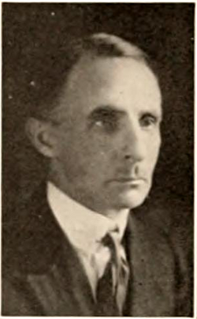

Meade Layne
Researcher, 1882 to 1961

Founded Borderland Sciences Research Associates in 1945. He proposed that flying saucers were "ether ships" from another plane of existence. 1
Open in the interactive Watcher
Related
- Borderland Sciences Research Associates
- BSRA founded Founded BSRA
Sources
- Meade Layne Wikipedia